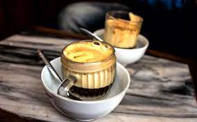

Vietnamese Egg Coffee

Whipping an egg yolk into sweetened condensed milk will give you a meringue-like, silky, smooth fluff. Top your coffee or iced coffee with this topping and you will have a Vietnamese specialty coffee.
Information
- Prep: 5 mins
- Cook: 5 mins
- Total: 1 mins
- Yield: 1 coffee
Ingredients
- 1 large egg yolk
- 2 tablespoons sweetened condensed milk
- 1/2 cup hot strong coffee
Directions
- Step 1: Place egg yolk and condensed milk in a tall jar. Whip with a milk frother until soft peaks form.
- Step 2: Pour hot coffee into a mug and top with frothed milk.